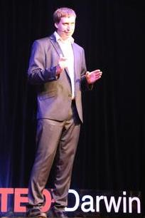

Interesting Academic Journal Articles
- The 50 Great Myths of Popular Psychology, https://emilkirkegaard.dk/en/wp-content/uploads/50-Great-Myths-of-Popular-Psychology.pdf
Teenagers
- We often think that reducing risk taking in teenagers is a good thing, this article suggests that taking prosocial risks decreases negative risk taking.
- Telzer, E. H., Fuligni, A. J., Lieberman, M. D., & Galvan, A. (2013). Ventral striatum activation to prosocial rewards predicts longitudinal declines in adolescent risk taking. Developmental cognitive neuroscience, 3, 45-52.
- Teenage passengers increase accidents for teenage drivers.
- Preusser, D. F., Ferguson, S. A., & Williams, A. F. (1998). The effect of teenage passengers on the fatal crash risk of teenage drivers. Accident Analysis and Prevention, 30(2), 217-222.
- The failure of the D.A.R.E program to produce any measurable results, also what is often not talked about is those who went through the program had a lower self esteem than those that didn't.
- Lynam, D. R., Milich, R., Zimmerman, R., Novak, S. P., Logan, T. K., Martin, C., ... & Clayton, R. (1999). Project DARE: no effects at 10-year follow-up. Journal of consulting and clinical psychology, 67(4), 590.
Sleep
- Teenagers have different sleeping times, the sleep deprivation in teenagers is a major contributing factor to many social and psychological problems.
- Hagenauer, M. H., Perryman, J. I., Lee, T. M., & Carskadon, M. A. (2009). Adolescent changes in the homeostatic and circadian regulation of sleep. Developmental neuroscience, 31(4), 276-284.
- Sleep deprivation changes the way we perceive faces. Losing Neutrality: The Neural Basis of Impaired Emotional Control without Sleep
- Eti Ben Simon, Noga Oren, Haggai Sharon, Adi Kirschner, Noam Goldway, Hadas Okon-Singer, Rivi Tauman, Menton M. Deweese, Andreas Keil and Talma Hendler Journal of Neuroscience 23 September 2015, 35 (38) 13194-13205.
- Irregular sleep patterns increase suicidal behavious. , Objectively Assessed Sleep Variability as an Acute Warning Sign of Suicidal Ideation in a Longitudinal Evaluation of Young Adults at High Suicide Risk
- by Rebecca A. Bernert, PhD; Melanie A. Hom, MS; Naomi G. Iwata, MSc; and Thomas E. Joiner, PhD in Journal of Clinical Psychiatry.
Mental Illness
- Anxiety can make the world smell worse.
- Krusemark, E. A., Novak, L. R., Gitelman, D. R., & Li, W. (2013). When the sense of smell meets emotion: anxiety-state-dependent olfactory processing and neural circuitry adaptation. Journal of Neuroscience, 33(39), 15324-15332.
- Depression affects the volume of the hippocampus.
- MacMaster, F. P., & Kusumakar, V. (2004). Hippocampal volume in early onset depression. BMC medicine, 2(1), 2.
Suicide
- Researchers found 94% of suicide survivors were still alive years later.
- Where Are They Now? A Follow-up Study of Suicide Attempters from the Golden Gate Bridge Richard H. Seiden, Ph.D., M.P.H. University of California at Berkeley
- Reducing media exposure to suicide dramatically reduces suicides
- Sonneck, G., Etzersdorfer, E., & Nagel-Kuess, S. (1994). Imitative suicide on the Viennese subway. Social science & medicine, 38(3), 453-457.
- Long term risks associated with self-harm
- Hawton, K., Zahl, D., & Weatherall, R. (2003). Suicide following deliberate self-harm: long-term follow-up of patients who presented to a general hospital. The British Journal of Psychiatry, 182(6), 537-542.
- Anxiety is also associated with suicide attempts
- Nepon, J., Belik, S. L., Bolton, J., & Sareen, J. (2010). The relationship between anxiety disorders and suicide attempts: findings from the National Epidemiologic Survey on Alcohol and Related Conditions. Depression and anxiety, 27(9), 791-798.
- Other
- We feel physical pain when we are rejected
- Eisenberger, N.I., Lieberman, M.D. & Williams, K.D. Does rejection hurt: an fMRI study of social exclusion. Science 302, 290-292 (2003).